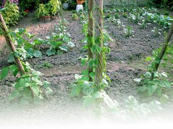
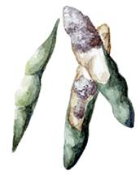
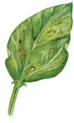
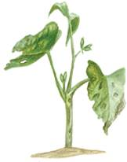
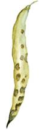

Болезни бобовых
 Настоящая мучнистая роса
Настоящая мучнистая роса
В отличие от ложной мучнистой росы эта болезнь не поражает всходы растений. Ее симптомы проявляются уже в период цветения. Белый мучнистый налет покрывает стебли, листья, приводит к гибели последних.
В борьбе с этой грибной инфекцией за основу берутся агротехнические методы.
Болезнь продолжается до конца периода вегетации, пока не подавит рост и развитие фасоли или гороха. Первые признаки заболевания легче обнаружить на стеблях: создается впечатление, что они слегка присыпаны мукой. Чем жарче лето и суше воздух, тем меньше урожай и тем хуже его качество.
Меры борьбы
Как только будут выяснены признаки заболевания, нужно как можно быстрее провести опрыскивание растений суспензией 1 %-ной коллоидной серы (50–60 г на сотку). Кроме того, больные растения можно опылить молотой серой (250–300 г порошка серы на сотку).
РжавчинаГриб поражает преимущественно фасоль и горох, переходя с сорняков молочайных разновидностей. Если молочай покрывается желтыми яркими подушечками, значит, он поражен ржавчиной. Даже при несильном повреждении гороха и происходит массовое заражение посевов. На горохе образуются такие же подушечки, к осени они чернеют. Листья с подушечками постепенно засыхают.
После снятия урожая болезнь сохраняется в растительных остатках.
У фасоли болезнь проявляется в виде мелких бурых подушечек на листьях и созревающих бобах. Разрастающиеся пятна приводят к гибели всего растения.

Не допускайте посадки фасоли и гороха после бобовых культур. В этом случае следует соблюдать севооборот.
На горохе образуются такие же подушечки и к осени они чернеют. Листья с подушечками постепенно засыхают. Болезнетворный гриб переходит в корневую систему молочая, где и зимует. Если поблизости не молочая, гриб остается в растительных остатках фасоли.
Меры борьбы
Молодые растения бобовых, пораженные ржавчиной, можно спасти, опрыскав их 1 %-ным раствором-суспензией бордоской жидкости, пока не наступило цветение. Все сорняки молочая необходимо уничтожать по мере их появления среди посевов или рядом с бобовыми культурами. Растительные остатки на заболевших посевах на заболевших посевах следует уничтожать сразу после уборки урожая. Не допускайте посевов гороха на том же самом месте, где до него росли бобы.
Деформирующая и желтая мозаикаПораженные этой вирусной инфекцией молодые растения резко приостанавливаются в росте. Листья приобретают неправильную и нетипичную для гороха и фасоли форму, покрываются желтыми, со временем бледнеющими пятнами. По мере развития болезни пятна становятся прозрачными.
У взрослых растений заражение вирусом сопровождается крапчатостью прицветников.
Листья становятся курчавыми и морщинистыми. Если вирус не получает сильного развития, то стручки формируются нормально, семена внутри не заражаются и не являются источником инфекции.
Меры борьбы
Не допускайте размножения тли на бобовых культурах. Если же она появилась, своевременно примите меры к ее уничтожению. Одновременно удаляйте сорную растительность и бобовые растения с признаками заболевания мозаикой. Не допускайте изреженности посевов, обеспечивайте нормальный стандарт высева. Чем раньше вы посеете бобовые, тем эффективнее будет борьба с мозаикой.
Для посева отбирайте только здоровые семена бобовых.
Белая гниль(склеротиниоз)Эта болезнь вызывается грибами, но выделяется в самостоятельную группу. Инфицированные ткани белеют, становятся мягкими, напоминая ватные клочки.
Переносчиками этой вирусной инфекции могут быть и насекомые – тли. Как правило, она развивается на стеблях у самой поверхности земли.
Бобы поражаются не так часто, но симптомы такие же четкие и опасные. Со временем пятна темнеют, так как в них размножаются черные склероции. Белая гниль особенно опасна, она способна одновременно поражать зонтичные, салат, огурцы и подсолнечник.
Грибница склеротиниоза имеет огромную разрушительную силу, нарастающую особенно активно в регионах с высокой влажностью почвы и воздуха. Этому также способствуют холодные весны с длительными осадками.
В таких районах не следует возделывать сорта гороха с полегающими стеблями, соприкасающимися с пораженной почвой, передающей инфекцию в первую очередь тканям, близко расположенным к источникам заражения белой гнилью.
Меры борьбы
Из агротехнических методов хорошие результаты дает внесение высоких доз калийных и фосфорных минеральных удобрений, своевременные посевы и частые, но не слишком обильные поливы, подкормки гороха фосфором. Регулярная фитопрочистка позволяет своевременно выявлять и удалять отдельные инфицированные растения и предотвращать массовое распространение склеротиниоза.

Белая гниль
Для посевов используйте только протравленные, проверенные семена бобовых культур. Параллельно особое внимание уделяйте борьбе с аскохитозом гороха и антракнозом фасоли.
После снятия стручков и бобов удаляйте все растительные остатки и сжигайте их, когда завершится обмолот.
Если земельные угодья для овощных культур большие, желательно разработать для них севооборот.
Известно несколько видов бактериоза фасоли. Один из часто встречающихся называется бактериальной пятнистостью листьев. Болезнь весьма стойка и долговечна, болезнетворное начало сохраняется в семенах годами, в растительных остатках бактериоз активен до полного перегнивания надземной и корневой систем, а также в почве, где росли больные экземпляры.
Меры борьбы
Больные растения опрыскивайте 1 %-ным раствором бордоской жидкости. Устойчивость к бактериозу повышают подкормки минеральными фосфорными и калийными удобрениями.
Подбирайте для гороха и фасоли участки с ранее возделывавшимися культурами, не поражающимися белой гнилью.
От болезнетворного начала в почве поможет избавиться возврат фасоли на прежнее место только через 3–4 года.
Когда на семядолях появились светло-желтые пятна, буреющие по мере развития бактериоза, как можно быстрее следует провести опрыскивание бордоской жидкостью, в противном случае инфекция перейдет на точки роста и полностью уничтожит сеянцы фасоли.
БактериозБолезнь вызывается опасным активным грибом, способным поражать стебли, листья, черешки и даже семядоли фасоли.
Стебли, листья и черешки покрываются бурыми пятнами. Листья травмируются, в них появляются дыры. Всходы страдают еще больше: семядоли и подсемядольные участки стебельков покрываются темными пятнами с розовым налетом, покровные ткани травмируются, вдавливаясь в пораженные участки. Антракноз затрагивает и плоды. На створках бобов возникают темные язвы с красновато-бурой каймой.

Бактериоз
Сливаясь, пятна могут закрыть всю створку боба, нарушая формирование семян. Если же семена все-таки успеют сформироваться, то они окажутся заражены болезнетворным грибом. Болезнь легко обнаружить на светлоокрашенных семенах: коричневые пятна на них хорошо видны. На темноокрашенных плодах пятна почти не просматриваются.
Разносчиками инфекции служат растительные остатки, не уничтоженные после обмолота семян и во время уборки урожая в поле.
Меры борьбы
Если гриб уже появился на фасоли, требуется опрыскивание растений 1 %-ной бордоской жидкостью.
Профилактическим приемом следует считать подкормку и основное внесение перед посевом фасоли высоких доз фосфорных и калийных минеральных удобрений, прогрев семян в воде при температуре 50 °C в течение 5 минут с последующим охлаждением и просушкой.
В процессе прогрева отбраковываются больные, щуплые, пораженные антракнозом семена, которые всплывают на поверхность воды. Для посева надо пользоваться только протравленными семенами. На прежнем месте фасоль не следует высевать в течение, как минимум, трех лет.


Растение, поврежденное антракнозом